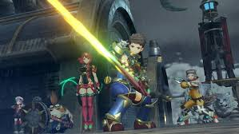
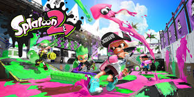

let's look at the top 11 Nintendo games of 2017.
Number 11
Fire Emblem Echoes: Shadow of Valentia
Shadows of Valentia is, much like it's brethren, a tactical rpg, and also a remake of the
Japan exclusive Fire Emblem game: "Fire Emblem Gaiden" (「ファイアーエムブレム外伝」, "Fire Emblem Side-story")
Number 10
Metroid: Samus Returns
Metroid: Samus Returns is, much like its predecessors, a "Metroidvania", a game which uses
mechanics similar to those of Metroid and Castlevania games. This means that you can explore
the world of Metroid like the older games.
Number 9
Pokémon Ultra Sun & Ultra Moon
Pokémon Ultra Sun & Ultra Moon focus on your fearless child protagonist as you adventure through the magical
world of Pokémon. Along the way, you fight team skull and the ultra beasts, on your journey to become a Pokémon Master.
Number 8
ARMS
Arms, unsurprisingly, is a fighting game about using arms for long-ranged punches.
You can even switch your hands out for: boomerangs, missiles, shurikens, and even a mechanical bird.
Number 7

Fire Emblem Warriors
Fire Emblem Warriors, much like Hyrule Warriors, is a combination between Dynasty Warriors and Fire Emblem.
It's a Hack & Slash game, unlike its tactical RPG roots.
Number 6

Mario + Rabbids Kingdom Battle
Despite the glaring issue of the Rabbids, "Mario + Rabbids Kingdom Battle" is a surprisingly fun and enjoyable game. The game is
a tactical, turn-based role-playing game; much like Xcom. However, unlike Xcom, you play as an assortment of
Mario and Rabbids related characters to fight the antagonists of said franchises. A strange combination, but it works
Number 5
Mario Kart 8 Deluxe
Mario Kart 8 Deluxe is a follow-up to Mario Kart 8 for the Nintendo Wii U and unlike the Wii U, doesn't contain DLC.
Mario Kart 8 Deluxe has every character from Mario Kart 8 including the DLC.
Number 4

Xenoblade Chronicles 2
Xenoblade Chronicles 2 is a sequel to Xenoblade Chronicles. It's an RPG featuring Rex, the main character,
who uses the Monado, a laser sword.
Number 3

Splatoon 2
Splatoon 2 is the sequel to Splatoon. Splatoon 2 is a shooting game with squids and ink.
Unconventionally, Splatoon 2 is actually a turf wars game; in which you fight to get the most land inked
in your colour.
Number 2

The Legend of Zelda: Breath of the Wild
The Legend of Zelda series usually features a new incarnation of link in his quest to defeat Ganondorf, the evil gerudo
warlock. But Breath of the Wild instead has link, who has been in a 100 year slumber, who awakes to a Hyrule destroyed by
Calamity Ganon.
Number 1

Super Mario Odyssey
Click here to see my review of Super Mario Odyssey for the Nintendo Switch
In Super Mario Odysseyyou play as mario but this time you have Cappy to keep you company in your journey to save
the Princess
Homepage